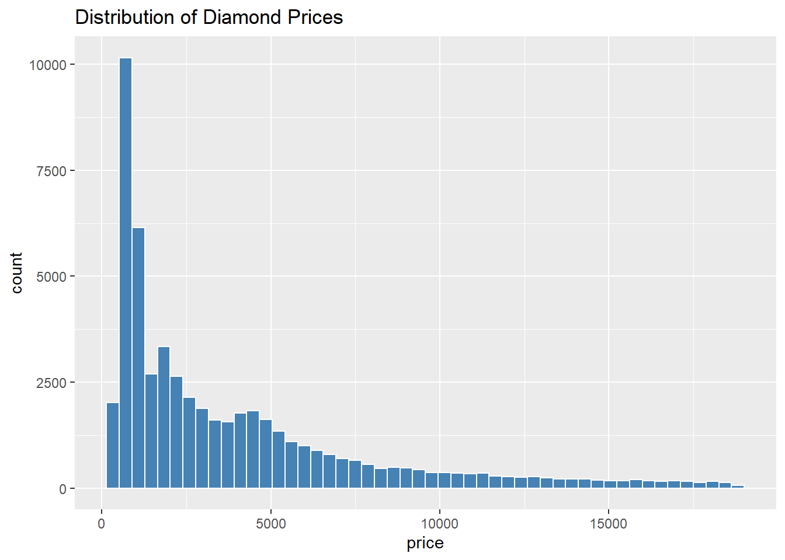
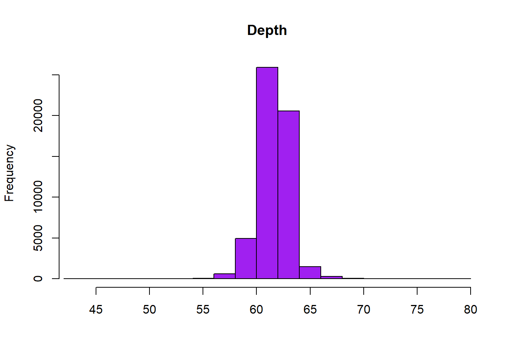
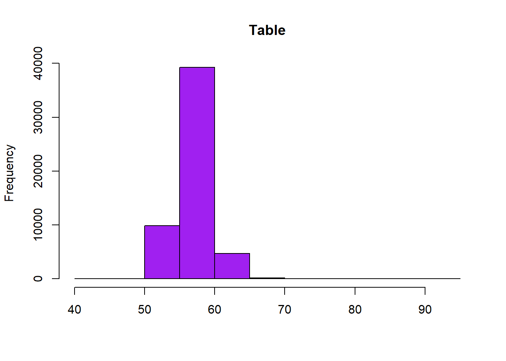
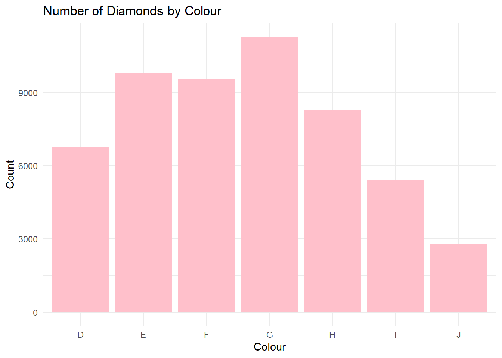
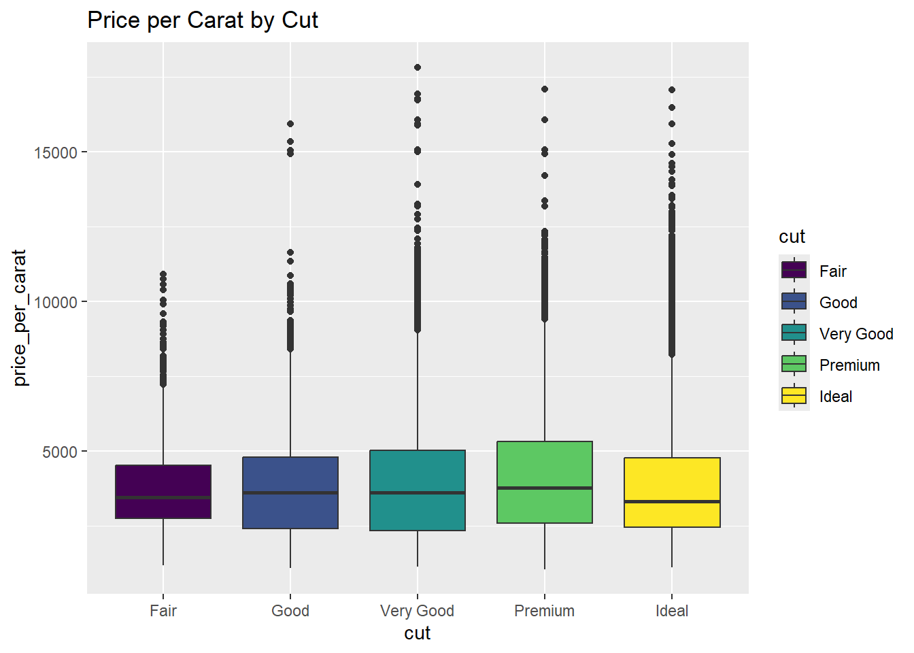
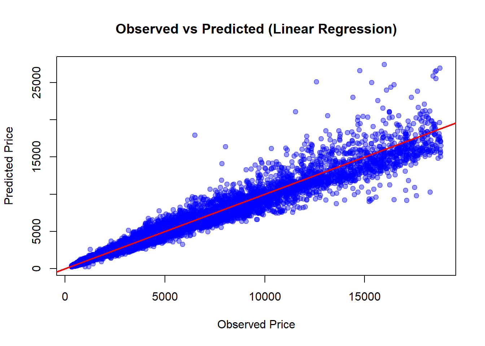

Data Science Project: Predicting Prices of Diamond using dataset from R library
Author
Reina Kaino
Introduction
This dataset contains the prices and other attributes of almost 54,000 diamonds. The dataset is used to predict the price of a diamond based on its characteristics such as carat, cut, color, clarity, and dimensions. The project involves data cleaning, exploratory data analysis, and building predictive models to understand the factors that influence diamond prices. The goal is to create a model that can accurately predict the price of a diamond based on its attributes.
Summary of Diamonds dataset
data(diamonds)head(diamonds)
# A tibble: 6 × 10
carat cut color clarity depth table price x y z
<dbl> <ord> <ord> <ord> <dbl> <dbl> <int> <dbl> <dbl> <dbl>
1 0.23 Ideal E SI2 61.5 55 326 3.95 3.98 2.43
2 0.21 Premium E SI1 59.8 61 326 3.89 3.84 2.31
3 0.23 Good E VS1 56.9 65 327 4.05 4.07 2.31
4 0.29 Premium I VS2 62.4 58 334 4.2 4.23 2.63
5 0.31 Good J SI2 63.3 58 335 4.34 4.35 2.75
6 0.24 Very Good J VVS2 62.8 57 336 3.94 3.96 2.48
Price: Price in US dollars (Range: $326-$18823)
Carat: Weight of the diamond (0.2-5.01)
Cut: Quality of the cut (Fair, Good, Very Good, Premium, Ideal)
Color: Diamond colour, from D (best) to J (worst)
Clarity: A measurement of how clear the diamond is (I1 (worst), SI2, SI1, VS2, VS1, VVS2, VVS1, IF (best))
x: Length in mm (0-10.74)
y: Width in mm (0-58.9)
z: Depth in mm(0-31.8)
Depth: Total depth percentage = z/mean(x,y)=2*z/(x+y)(43-79)
Table: Width of top of diamond relative to widest point (43-95)
Data Cleaning & Feature Engineering
Check for any impossible measurements (x, y, or z = 0) and remove them:
sum(diamonds$x ==0)
[1] 8
sum(diamonds$y ==0)
[1] 7
sum(diamonds$z ==0)
[1] 20
diamonds <-subset(diamonds, x >0& y >0& z >0)
Check for any missing values that are significant:
sum(is.na(diamonds))
[1] 0
any(diamonds =="")
[1] FALSE
Create price per carat.
Apply log transformation to reduce skewness (As seen in the later observations)
Outliers are kept for this instance as most of the outliers are assumed to be true observations - They are not data errors, they are the expensive range. Removing these from the dataset would cause bias and underestimate prices for higher-end diamonds.
Exploratory Data Analysis
Price Distribution
ggplot(diamonds, aes(price)) +geom_histogram(bins =50, fill ="steelblue", color ="white") +labs(title ="Distribution of Diamond Prices")

hist(diamonds$carat, main ="Carat", xlab ="", col ="purple")
hist(diamonds$depth, xlim=c(43,79), main ="Depth", xlab ="", col ="purple")

hist(diamonds$table, main ="Table", xlab ="", col ="purple")

hist(diamonds$price, main ="Price", xlab ="", col ="purple")
ggplot(diamonds, aes(x = cut)) +geom_bar(fill ="pink") +labs(title ="Number of Diamonds by Cut", x ="Cut", y ="Count") +theme_minimal()
ggplot(diamonds, aes(x = color)) +geom_bar(fill ="pink") +labs(title ="Number of Diamonds by Colour", x ="Colour", y ="Count") +theme_minimal()

ggplot(diamonds, aes(x = clarity)) +geom_bar(fill ="pink") +labs(title ="Number of Diamonds by Clarity", x ="Clarity", y ="Count") +theme_minimal()
Price per Carat by Cut
ggplot(diamonds, aes(cut, price_per_carat, fill = cut)) +geom_boxplot() +labs(title ="Price per Carat by Cut")

This box plot shows that the quality of cut does not have such a significant effect in price change.
Only numerical variables are used for correlation matrix. It makes sense that carat is highly correlated with x, y and z: the bigger the diamond the heavier. The most interesting observation here is the high correlation between price and carat.
Modelling
Both Linear Regression and Random Forest are used to compare the accuracy of the predictions.
log_price and log_carat were used in the linear regression model whereas Random Forest used variables without conversion. This is due to Linear Regression assumeing linearity and constant variance.
Random Forest, on the other hand, handles skewed distribution and heteroscedasticity much better. It is easier to interpret raw data.
Both of these exclude variables such as x, y, z etc. as they are variables strongly related to each other. Including them in these models may lead to multicollinearity and the over-fitting of the data.
The R-squared and the adjusted R-squared values are both 0.9826. 98% of the variation in log(price) is explained by the model: The regression fits the data very well.
The p-value is very small (<0.05) meaning we can reject the null hypothesis that there are no correlations between the dependent (Price) and the independent variables.
Looking at the coefficient, along with the lowest standard error and the highest t-value, log(carat) is concluded to be the highest predictor of price. One unit of increase in carat increases price by exp(1.88) = 6.55x.
Ranger result
Call:
ranger(price ~ carat + cut + color + clarity, data = train_sample, num.trees = 100, importance = "impurity")
Type: Regression
Number of trees: 100
Sample size: 10000
Number of independent variables: 4
Mtry: 2
Target node size: 5
Variable importance mode: impurity
Splitrule: variance
OOB prediction error (MSE): 345647.8
R squared (OOB): 0.9770426
R-squared value was 0.977. As later seen in the evaluation, the linear regression model has heteroscedasticity. This Random Forest model predicts prices more accurately especially for more expensive, bigger carat diamonds.
Model Evaluation
Linear Regression Diagnostics
Observed vs Predicted
pred <-exp(predict(fit, newdata = test))obs <- test$priceplot(obs, pred,xlab ="Observed Price", ylab ="Predicted Price",main ="Observed vs Predicted (Linear Regression)", pch =19, col =rgb(0,0,1,0.4))abline(0, 1, col ="red", lwd =2)

Residuals vs Predicted
residuals <- obs - predplot(pred, residuals,xlab ="Predicted Price", ylab ="Residuals",main ="Residuals vs Predicted", pch =19, col =rgb(1,0.5,0,0.5))abline(h =0, col ="red", lwd =2)
QQ-Plot of Residuals
qqnorm(residuals, main ="QQ-Plot of Residuals")qqline(residuals, col ="red", lwd =2)
log() was transformed back to the raw data with exp().
Although the lines shown on these graphs are straight, the dots spread out as higher the price becomes. The higher the price becomes, more errors in prediction becomes obvious. The increase in values of residuals is visible, therefore the conclusions are that:
Linear regression assumption of constant variance are not met
Model predictions are less reliable for more expensive diamonds as errors are larger
Despite these results, the residuals are small for typical diamonds, so the linear regression model predicts well in the common price range.
Random Forest handles this better because it does not assume constant variance.
carat cut color clarity
134362873572 1263539745 4621682773 7710461114
Random Forest showed r-squared value of 0.977 which is higher than that of linear regression (0.961). RMSE (Root means squared error) was also lower for Random Forest, meaning that this model predicts the price better.
Conclusions
Carat is the strongest predictor of diamond price.
Cut, color, and clarity refine predictions.
In this case where the null hypothesis of constant variance was rejected, Random Forest performed better in accurate predictions of prices.